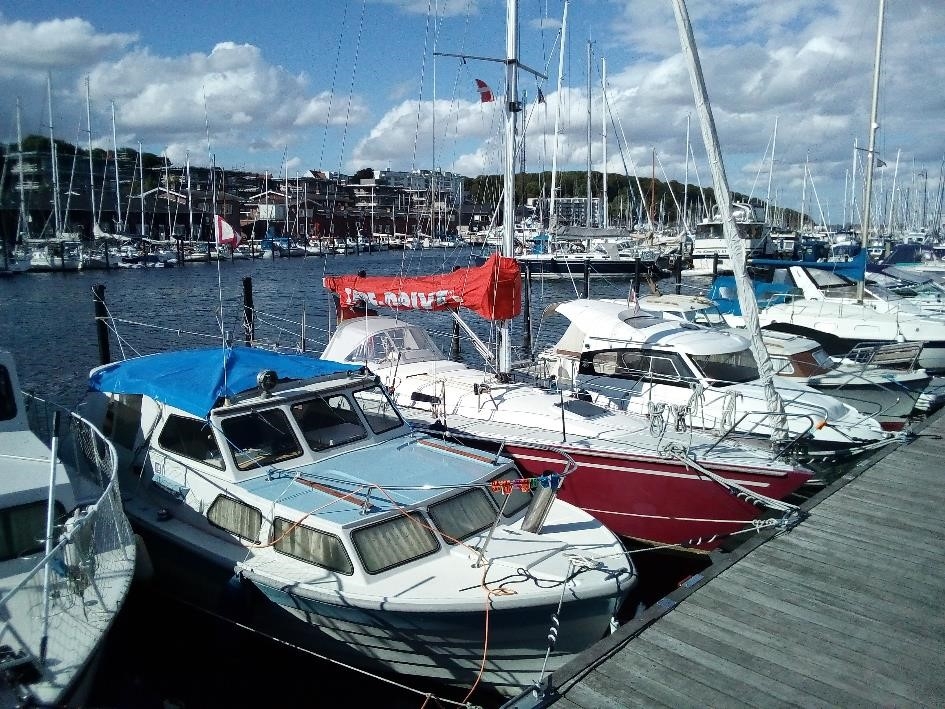

Pour ce voyage, mon programme était simple : visiter le pays du nord au sud et terminer à Copenhague où je retrouve un super pote. Le pays est plutôt petit, alors 2 semaines sont largement suffisantes pour visiter le visiter. Pour vous donner un aperçu de mon itinéraire, voici une petite carte.
J'arrive à Aarhus le soir tombant, direction le airBnB que j'ai loué pour la nuit. Petite anecdote étrange sur cette nuit ^^ Comme cela se fait de plus en plus, l'appart fonctionne avec une boîte à clef et un code que la propriétaire m'envoie par téléphone. Jusqu'ici tout va bien, sauf qu'au moment où je rentre, une personne dort sur le canapé alors que je devais être seul

Ribe est une petite ville côtière à l'ouest du Danemark. En descendant depuis Aarhus, on croise le musée du LEGO qui
Pour ce voyage, mon programme était simple : visiter le pays du nord au sud et terminer à Copenhague où je retrouve un super pote. Le pays est plutôt petit, alors 2 semaines sont largement suffisantes pour visiter le visiter. Pour vous donner un aperçu de mon itinéraire, voici une petite carte.